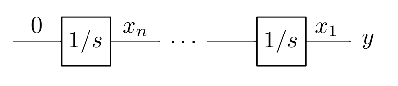
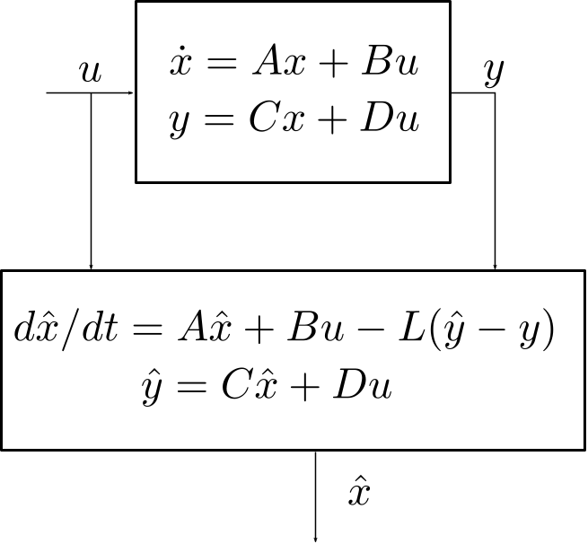
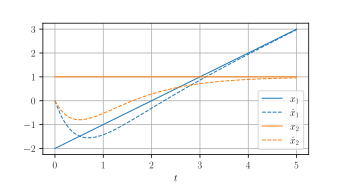
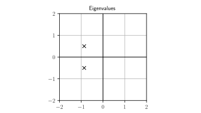
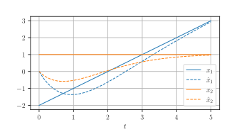

Observers
Sébastien Boisgérault, Mines ParisTech
Preamble
from numpy import *
from numpy.linalg import *
from numpy.testing import *
from matplotlib.pyplot import *
from scipy.integrate import *Observability
Motivation
Controling a system generally requires the knowledge of the state \(x(t)\), but measuring every state variable may be impossible (or too expensive).
Can we reduce the amount of physical sensors and still be able to compute the state with “virtual” or “software” sensors ?
Control engineers call these software devices observers.
First we adress the mathematical feasibility of observers: observability.
Definition
The system
\[ \left| \begin{array}{rcl} \dot{x} &=& f(x) \\ y &=& g(x) \end{array} \right. \]
is observable if the knowledge of \(y(t) = g(x(t))\) on some finite time span \([0, \tau]\) determines uniquely the initial condition \(x(0)\).
Remarks
The knowledge of \(x(0)\) determines uniquely \(x(t)\) via the system dynamics.
Later, observers will provide merely asymptotically exact estimates \(\hat{x}(t)\) of \(x(t)\), that satisfy
\(\hat{x}(t) - x(t)\) when \(t \to +\infty\).
Extension
The definition of observability may be extended to systems with (known) inputs \(u\):
\[ \left| \begin{array}{rcl} \dot{x} &=& f(x, u) \\ y &=& g(x, u) \end{array} \right. \]
In general, the input \(u\) may then be selected specifically to generate the appropriate \(y(t)\) that allows us to compute \(x(0)\).
But for linear systems, the choice of \(u\) is irrelevant.
Indeed, if
\[ \left| \begin{array}{rcl} \dot{x} &=& Ax + Bu \\ y &=& C x + D u \end{array} \right. \]
and we can deduce \(x(0)\) from \(y(t)\) when \(u=0\):
\[ y_0(t) = C e^{At} x(0) \; \to \; x(0) \]
then in the general case, when we measure
\[ y_u(t) = C e^{At} x(0) + (H \ast u)(t) \]
we can compute
\[ y_0(t) = y_u(t) - (H \ast u)(t) \]
and deduce \(x(0)\) at this stage.
Observability / Car
The position \(x\) (in meters) of a car of mass \(m\) (in kg) on a straight road is governed by
\[ m \ddot{x} = u \]
where \(u\) the force (in Newtons) generated by its motor.
we don’t know where the car is at \(t=0\),
we don’t know what its initial speed was,
but we know that the car doesn’t accelerate (\(u=0\)).
If we measure the position \(y(t) = x(t)\):
\(x(0) = y(0)\) is known,
\(\dot{x}(0) = \dot{y}(0)\) is also computable.
Thus the system is observable.
But what if we measure instead the speed \(y(t) = \dot{x}(t)\) ?
The system dynamics \(m \ddot{x}(t) = u(t) = 0\) yields \[ x(t) = x(0) + \dot{x}(0) t \] thus \[ \dot{x}(t) = \dot{x}(0) \] and any \(x(0)\) is consistent with a measure of a constant speed.
We can’t deduce the position of the car from the measure of its speed; the system is not observable.
Kalman Criterion
The system \(\dot{x} = Ax, \, y = C x\) is observable iff:
\[ \mathrm{rank} \, \left[ \begin{array}{c} C \\ CA \\ \vdots \\ C A^{n-1} \end{array} \right] = n \]
\([C; \dots; C A^{n-1}]\) is the Kalman observability matrix.
(“\(;\)” denotes the column concatenation of matrices)
Duality
Since
\[ [C; \dots; C A^{n-1}]^t = [C^t, \dots, (A^t)^{n-1}C^t], \]
the system \(\dot{x} = A x, \; y = Cx\) is observable iff the system \(\dot{x} = A^t x + C^t u\) is controllable.
Fully Measured System
Consider \(\dot{x} = A x, \; y = Cx\) with \(x \in \mathbb{R}^n\), \(y \in\mathbb{R}^p\) and \(\mathrm{rank} \, C = n\).
- [, ] Is the system observable ?
Integrator Chain
 \[\dot{x}_n = 0, \, \dot{x}_{n-1} = x_n, \, \cdots \,, \dot{x}_1 = x_2, \, y=x_1\]
- [, ] Show that the system is observable.
Heat Equation

\(d T_1/dt = 0 + (T_2 - T_1)\)
\(d T_2/dt = (T_1 - T_2) + (T_3 - T_2)\)
\(d T_3/dt = (T_2 - T_3) + (T_4 - T_3)\)
\(d T_4/dt = (T_3 - T_4)\)
\(y = T_4\)
[, ] Show that the system is observable.
[, ] Is it still true if the four cells are organized as a square and the temperature sensor is in any of the corners ? How many independent sensors do you need to make the system observable and where can you place them?
Observer Design
\[ \left| \begin{split} \dot{x} = A x + B u \\ y = C x + D u \end{split} \right. \]
State Observer v1
Simulate the system behavior
\[ \left| \begin{split} \frac{d\hat{x}}{dt} &= A \hat{x} + B u \\ \hat{y} &= C \hat{x} + D u \end{split} \right. \]
and since we don’t know better,
\[ \hat{x}(0) = 0. \]
State Estimate Error
Does \(\hat{x}(t)\) provide a good asymptotic estimate of \(x(t)\) ?
The dynamics of the state estimate error \(e = \hat{x} - x\) is
\[ \begin{split} \dot{e} & = \frac{d}{dt}(\hat{x} - x) \\ & = \frac{d\hat{x}}{dt} - \dot{x} \\ & = (A \hat{x} + Bu) - (A x + Bu) \\ & = A e \end{split} \]
The state estimator error \(e(t)\), solution of
\[ \dot{e} = A e \]
doesn’t satisfy
\[ \lim_{t \to +\infty} e(t) = 0 \]
for every value of \(e(0) = \hat{x}(0) - x(0)\), unless the eigenvalues of \(A\) are in the open left-hand plane (i.e. \(\dot{x} = A x\) is asymptotically stable).
State Observer v2
Change the observer dynamics to account for differences between \(\hat{y}\) and \(y\) (both known values):
\[ \left| \begin{split} \frac{d\hat{x}}{dt} &= A \hat{x} + B u - L (\hat{y} - y)\\ \hat{y} &= C \hat{x} + D u \end{split} \right. \]
for some observer gain matrix \(L \in \mathbb{R}^{n \times p}\)
(to be determined).

The new dynamics of \(e = \hat{x} - x\) is
\[ \begin{split} \dot{e} & = \frac{d}{dt}(\hat{x} - x) \\ & = \frac{d\hat{x}}{dt} - \dot{x} \\ & = (A \hat{x} + Bu - L(C \hat{x} - C x)) - (A x + Bu) \\ & = (A - LC) e \end{split} \]
Reminder
The system \(\dot{x} = A x, \; y = Cx\) is observable
\(\Longleftrightarrow\)
The system \(\dot{x} = A^t x + C^t u\) is commandable.
So what?
In this case, we can perform arbitrary pole assignment:
for any conjugate set \(\Lambda\) of eigenvalues,
there is a matrix \(K \in \mathbb{R}^{p \times n}\) such that
\[ \sigma(A^t - C^t K) = \Lambda \]
Since \(\sigma(M) = \sigma(M^t)\) for any square matrix \(M\),
\[ \begin{split} \sigma(A^t - C^t K) & = \sigma((A - K^tC)^t) \\ & = \sigma(A - K^t C) \\ \end{split} \]
Observers / Pole Assignment
Thus, if we set
\[ L = K^t \]
we have solved the pole assignment problem for observers:
\[ \sigma(A - L C) = \Lambda \]
Observer/Pole Assignment
Consider the double integrator \(\ddot{y} = u\)
\[ \frac{d}{dt} \left[\begin{array}{c} x_1 \\ x_2 \end{array}\right] = \left[\begin{array}{cx} 0 & 1 \\ 0 & 0\end{array}\right] \left[\begin{array}{c} x_1 \\ x_2 \end{array}\right] + \left[\begin{array}{c} 0 \\ 1 \end{array}\right] u \]
\[ y = \left[ \begin{array}{cc} 1 & 0 \end{array} \right] \left[\begin{array}{c} x_1 \\ x_2 \end{array}\right] \]
(in standard form)
from scipy.signal import place_poles
A = array([[0, 1], [0, 0]])
C = array([[1, 0]])
poles = [-1, -2]
K = place_poles(A.T, C.T, poles).gain_matrix
L = K.T
assert_almost_equal(K, [[3.0, 2.0]])\[ \frac{d}{dt} \left[\begin{array}{c} \hat{x}_1 \\ \hat{x}_2 \end{array}\right] = \left[\begin{array}{cx} 0 & 1 \\ 0 & 0\end{array}\right] \left[\begin{array}{c} \hat{x}_1 \\ \hat{x}_2 \end{array}\right] + \left[\begin{array}{c} 0 \\ 1 \end{array}\right] u - \left[\begin{array}{c} 3 \\2 \end{array}\right] (\hat{y} - y) \]
\[ \hat{y} = \left[ \begin{array}{cc} 1 & 0 \end{array} \right] \left[\begin{array}{c} \hat{x}_1 \\ \hat{x}_2 \end{array}\right] \]
def fun(t, X_Xhat):
x, x_hat = X_Xhat[0:2], X_Xhat[2:4]
y, y_hat = C.dot(x), C.dot(x_hat)
dx = A.dot(x)
dx_hat = A.dot(x_hat) - L.dot(y_hat - y)
return r_[dx, dx_hat]y0 = [-2.0, 1.0, 0.0, 0.0]
result = solve_ivp(fun=fun, t_span=[0.0, 5.0], y0=y0, max_step=0.1)figure()
t = result["t"]
y = result["y"]
plot(t, y[0], "b", label="$x_1$")
plot(t, y[2], "b:", alpha=0.5, label=r"$\hat{x}_1$")
plot(t, y[1], "g", label="$x_2$")
plot(t, y[3], "g:", alpha=0.5, label=r"$\hat{x}_2$")
grid(); legend()
Kalman Filtering
Setting
Consider \(\dot{x} = A x, \; y = Cx\) where:
the state \(x(t)\) is unknown (\(x(0)\) is unknown),
only (a noisy version of) \(y(t)\) is available.
We want a sensible estimation \(\hat{x}(t)\) of \(x(t)\).
We now assume the existence of state and output disturbances \(v(t)\) and \(w(t)\) (deviations from the exact dynamics)
\[ \left| \begin{split} \dot{x} &= A x + v \\ y &= C x + w \end{split} \right. \]
Thes disturbances (or “noises”) are unknown; we are searching for the estimate \(\hat{x}(t)\) of \(x(t)\) that requires the smallest deviation from the exact dynamics to explain the data.
For a known \(y(t)\), among all possible trajectories \(x(t)\) of the system, find the one that minimizes
\[ J = \int_0^{+\infty} v(t)^t Q v(t) + w(t)^t R w(t) \, dt \]
where:
\(Q \in \mathbb{R}^{n \times n}\) and \(R \in \mathbb{R}^{p\times p}\),
(to be continued …)
\(Q\) and \(R\) are symmetric (\(R^t = R\) and \(Q^t = Q\)),
\(Q\) and \(R\) are positive definite (denoted “\(>0\)”)
Heuristics
If it is known that there is a large state disturbance but small output disturbance, it makes sense to reduce the impact of the state disturbance in the composition of \(J\), hence to select a small \(Q\) wrt \(R\).
Optimal Solution
Assume that \(\dot{x} = A x, \; y = Cx\) is observable.
There is a state estimation \(\hat{x}(t)\), given for some \(L \in \mathbb{R}^{n \times p}\) as the solution of
\[ \left| \begin{split} d\hat{x}/dt &= A \hat{x} - L (\hat{y} - y)\\ \hat{y} &= C \hat{x} \end{split} \right. \]
The dynamics of the corresponding estimation error \(e(t) = \hat{x}(t) - x(t)\) is asymptotically stable.
Algebraic Riccati Equation
The gain matrix \(L\) is given by
\[ L = \Sigma C^t R, \]
where \(\Sigma \in \mathbb{R}^{n \times n}\) is the unique matrix such that \(\Sigma^t = \Sigma\), \(\Sigma > 0\) and
\[ \Sigma C^t R C \Sigma - \Sigma A^t - A \Sigma - Q^{-1} = 0. \]
Optimal Control \(\leftrightarrow\) Filter
Solve the Ricatti equation for optimal control with
\[ (A, B, Q, R) = (A^t, C^t, Q^{-1}, R^{-1}) \]
then
\(\Sigma = \Pi^t\) and \(L = K^t.\)
Kalman Filter
Consider the system \[ \begin{split} \dot{x} &= v\\ y &= x + w \end{split} \]
If we believe that the state and output perturbation are of the same scale, we may try
\[ Q=[1.0], R=[1.0] \]
With \(\Sigma = [\sigma]\), the filtering Ricatti equation becomes
\[ \sigma^2 - 2\sigma - 1 = 0 \]
whose only positive solution is
\[ \sigma = \frac{2 + \sqrt{(-2)^2 - 4\times 1 \times (-1)}}{2} = 1+\sqrt{2}. \]
With \(L = [\ell]\), we end up with
\(\ell = \sigma = 1 + \sqrt{2}.\)
Thus, the optimal filter is
\[ \begin{split} d\hat{x}/dt &= - (1+\sqrt{2})(\hat{y} - y)\\ \hat{y} &= \hat{x} \end{split} \]
Stabilization/Kalman Filter
Consider the double integrator \(\ddot{x} = 0,\) \(y=x\).
\[ \frac{d}{dt} \left[\begin{array}{c} x \\ \dot{x} \end{array}\right] = \left[\begin{array}{cc} 0 & 1 \\ 0 & 0\end{array}\right] \left[\begin{array}{c} x \\ \dot{x} \end{array}\right] + \left[\begin{array}{c} v_1 \\ v_2 \end{array}\right], y = \left[\begin{array}{c} 1 & 0 \end{array} \right] \left[\begin{array}{c} x \\ \dot{x} \end{array}\right] + w \]
(in standard form)
from scipy.linalg import solve_continuous_are
A = array([[0, 1], [0, 0]])
B = array([[0], [1]])
Q = array([[1, 0], [0, 1]]); R = array([[1]])
Sigma = solve_continuous_are(A.T, C.T, inv(Q), inv(R))
L = Sigma @ C.T @ R
eigenvalues, _ = eig(A - L @ C)
assert all([real(s) < 0 for s in eigenvalues])figure()
x = [real(s) for s in eigenvalues]
y = [imag(s) for s in eigenvalues]
plot(x, y, "kx", ms=12.0)
xticks([-2, -1, 0, 1, 2])
yticks([-2, -1, 0, 1, 2])
plot([0, 0], [-2, 2], "k")
plot([-2, 2], [0, 0], "k")
grid(True)
title("Eigenvalues")
def fun(t, X_Xhat):
x, x_hat = X_Xhat[0:2], X_Xhat[2:4]
y, y_hat = C.dot(x), C.dot(x_hat)
dx = A.dot(x)
dx_hat = A.dot(x_hat) - L.dot(y_hat - y)
return r_[dx, dx_hat]y0 = [-2.0, 1.0, 0.0, 0.0]
result = solve_ivp(fun=fun, t_span=[0.0, 5.0], y0=y0, max_step=0.1)figure()
t = result["t"]
y = result["y"]
plot(t, y[0], "b", label="$x_1$")
plot(t, y[2], "b:", alpha=0.5, label=r"$\hat{x}_1$")
plot(t, y[1], "g", label="$x_2$")
plot(t, y[3], "g:", alpha=0.5, label=r"$\hat{x}_2$")
grid(); legend()